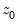
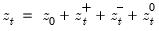
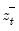
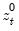

|
|
|
given a initial value  as  where
, , and  are the partial sum processes of the differences for positive, negative, and zero changes in
relative to the threshold y:
 .
. argument specifies the threshold value. By default
argument specifies the threshold value. By default  .
.